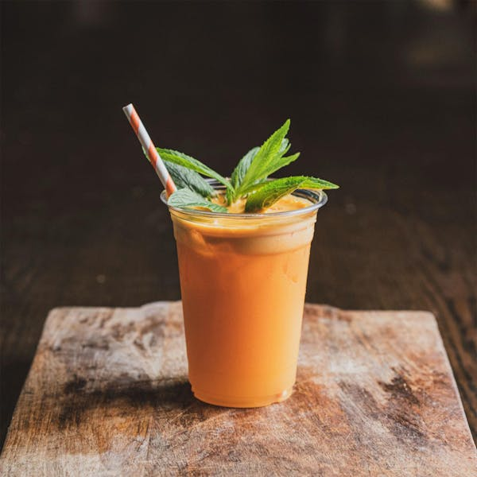
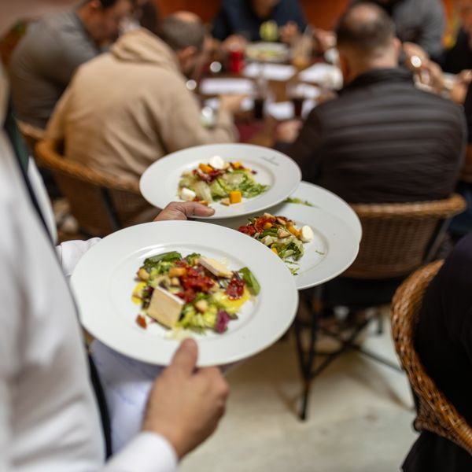
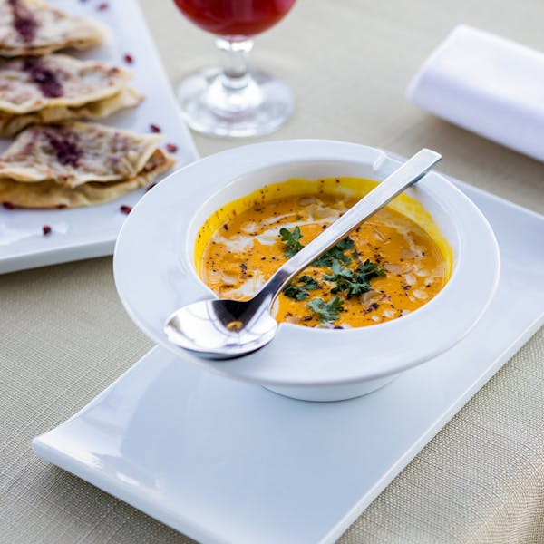
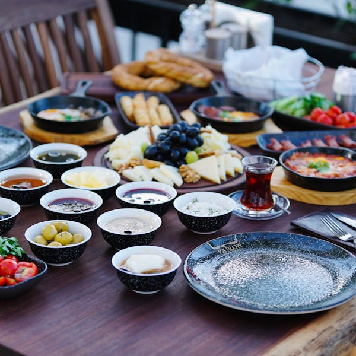
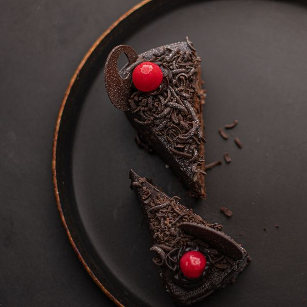
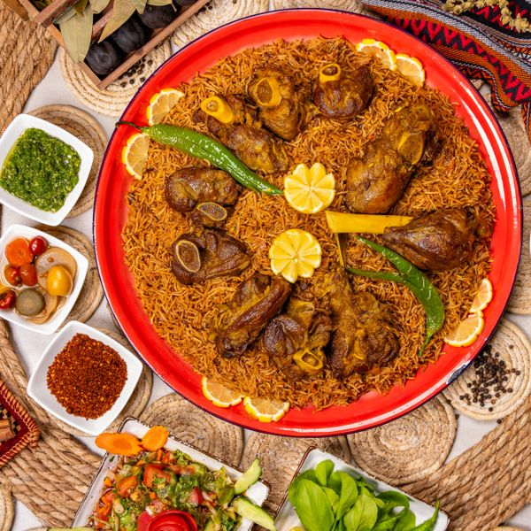
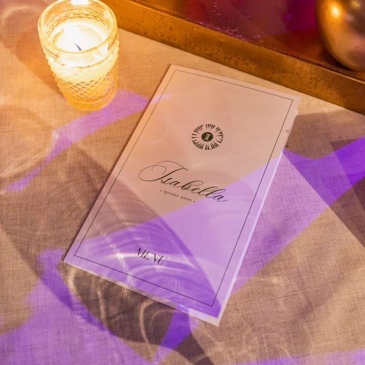
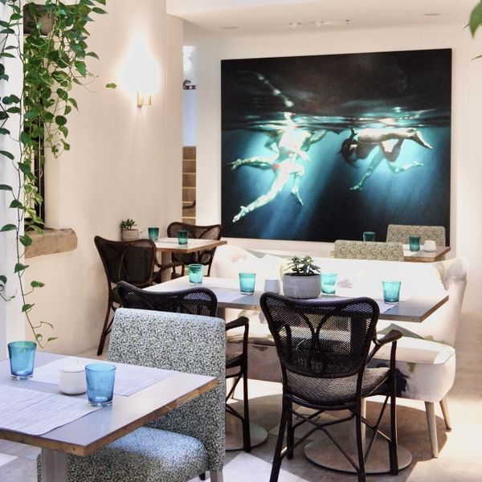

A

any kind of drink, hot or cold
| Quality of a good waiter | My rank | Partner's rank |
|---|---|---|
| knows every dish on the menu very well | ||
| is polite and friendly with every guest | ||
| serves food quickly and carefully | ||
| remembers guests' dietary needs (allergies, halal, vegetarian) | ||
| can suggest dishes and drinks confidently in English |







